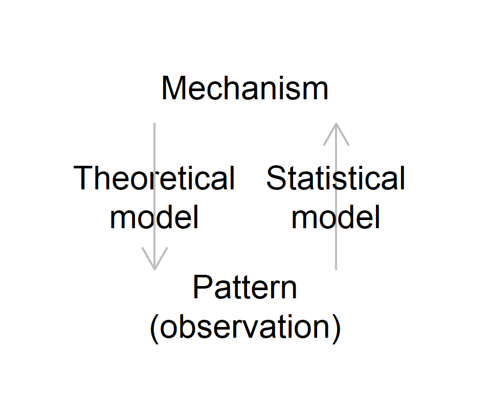

Competition
BIO605 FA20
Community Ecology
What is a community?
A group of species that interact in a given space
- Communities have structure, including species richness, relative abundance etc.
- Different types of interactions
- Why is it important to study interactions in a community?
Interctions matter
Species interactions can be a determinant of:
- persistence of constituent species
- stability of a community
- ecosystem functions
Types of interactions
List species interactions
- Competition
- Predation
- Mutualism
- Parasitism
- Commensalism
- and more…
Competition
Competition is considered to be a dominant (perhaps THE dominant) type of species interactions in a community*.
*I doubt it
Contest competition
One or few individuals dominate resources
Scramble competition
Depletes resources and all competitors are affected
Competition models
Recall: logistic model
One species model (Logistic model):
\[ \begin{align} \frac{dN}{dt} &= rN(1-\frac{N}{K}) &&\text{Logistic model}\\ \end{align} \]
Include competition
Add \(N_2\) to the equation:
\[ \begin{align} \frac{dN_1}{dt} &= r_1N_1(1-\frac{N_1+N_2}{K_1})\\ \end{align} \]
How does \(N_2\) impact \(\frac{dN_1}{dt}\)?
R exercise: set parameters
Visualize how \(N_2\) impacts \(\frac{dN_1}{dt}\)
Set \(r\), \(K_1\), \(N_1\), and \(N_2\)
\(N_2\) is set to be \(0\) for reference
R exercise: equation
Write equation
\[ \frac{dN_1}{dt} = r_1N_1(1-\frac{N_1+N_2}{K_1})\\ \]
R exercise: visualize
R exercise: visualize
R exercise: visualize
R exercise: visualize
R exercise: visualize
Impact of competition
Logistic model + species 2 (\(N_2\))
\[ \frac{dN_1}{dt} = r_1N_1(1-\frac{N_1+N_2}{K_1})\\ \]
- As \(N_2\) increases, the population growth of \(N_1\) becomes negative more quickly
- Population size of species 1 reaches its equilibrium below \(K_1\), the carrying capacity in the absence of species 2
Assumptions
Logistic model + species 2 (\(N_2\))
\[ \frac{dN_1}{dt} = r_1N_1(1-\frac{N_1+N_2}{K_1})\\ \]
The above model assumes per-capita impacts are equal b/w species 1 and 2
Competition coefficient
Logistic model + species 2 (\(N_2\))
\[ \frac{dN_1}{dt} = r_1N_1(1-\frac{N_1+ \alpha N_2}{K_1})\\ \]
Multiply \(\alpha\) to model different impacts of species 2
\(\alpha\) is referred to as the competition coefficient
- \(\alpha < 0\) … effect of species 2 is less than species 1
- \(\alpha > 0\) … effect of species 2 is greater than species 1
Assumptions
Logistic model + species 2 (\(N_2\))
\[ \frac{dN_1}{dt} = r_1N_1(1-\frac{N_1+ \alpha N_2}{K_1})\\ \]
The above model assumes
- \(N_2\) is constant
- \(N_1\) has no impacts on \(N_2\)
Lotka-Volterra model
Lotka-Volterra model
\[ \frac{dN_1}{dt} = r_1N_1(1-\frac{N_1+ \alpha_{12} N_2}{K_1})\\ \frac{dN_2}{dt} = r_2N_2(1-\frac{N_2+ \alpha_{21} N_1}{K_2})\\ \]
The above equation models dynamic interactions of the two competing species
Lotka-Volterra model
Lotka-Volterra model (different form)
\[ \frac{dN_1}{dt} = N_1(r_1-\beta_1 N_1 - \gamma_{12}N_2)\\ \frac{dN_2}{dt} = N_2(r_2-\beta_2 N_2 - \gamma_{21}N_1)\\ \]
- \(\beta_i\) Intraspecific competition coefficient
- \(\gamma_{ji}\) Interspecific competition coefficient
Relate parameters
\[ \begin{align} \frac{dN_1}{dt} &= r_1N_1(1-\frac{N_1+ \alpha_{12} N_2}{K_1})\\ &= N_1(r_1 - \frac{r_1}{K_1}N_1 - \frac{r_1 \alpha_{12}}{K_1} N_2)\\ &= N_1(r_1 - \beta_1 N_1 - \beta_1 \alpha_{12} N_2)\\ &= N_1(r_1 - \beta_1 N_1 - \gamma_{12} N_2)\\ \end{align} \]
where \(\beta_1 = \frac{r_1}{K_1}\) and \(\alpha_{12} = \frac{\gamma_{12}}{\beta_1}\)
\(\alpha_{12}\) is the ratio of inta- and interspecific competition coefficitents
Predict consequences of competition
Model prediction

Theory
- Generate predictions with given mechanisms
Model prediction
Much of interests in community ecology is the coexistence of competiting species
What does the Lotka-Volterra model predict?
Discrete version
Make the discrete version of the Lotka-Volterra model
In analogy of trasformation from the logistic to Beverton-Holt model
\[ N_{1,t+1} = (\frac{\lambda_1}{1 + \beta_1 N_{1,t} + \gamma_{12}N_{2,t}}) N_{1,t}\\ N_{2,t+1} = (\frac{\lambda_2}{1 + \beta_2 N_{2,t} + \gamma_{21}N_{1,t}}) N_{2,t} \]
R exercise: set parameters
Set \(\lambda\), \(\beta_i\), and \(\gamma_{ji}\)
R exercise: initial abundance
Set initial abundance N1[1] and N2[1]
R exercise: equation
Write the equations
\[ N_{1,t+1} = (\frac{\lambda_1}{1 + \beta_1 N_{1,t} + \gamma_{12}N_{2,t}}) N_{1,t}\\ N_{2,t+1} = (\frac{\lambda_2}{1 + \beta_2 N_{2,t} + \gamma_{21}N_{1,t}}) N_{2,t} \]
R exercise: print
Check the first 5 time steps
## [1] 10.00000 10.90909 11.52000 11.95514 12.27701## [1] 5.000000 5.000000 4.925373 4.838899 4.760467R exercise: visualize
R exercise: visualize
Model prediction
\[ N_{1,t+1} = (\frac{\lambda_1}{1 + \beta_1 N_{1,t} + \gamma_{12}N_{2,t}}) N_{1,t}\\ N_{2,t+1} = (\frac{\lambda_2}{1 + \beta_2 N_{2,t} + \gamma_{21}N_{1,t}}) N_{2,t} \]
In the previous exercise, we set:
- \(\lambda_1 = \lambda_2\) = 3
- \(\beta_1\) = 0.1 and \(\gamma_{21}\) = 0.05
- \(\beta_2\) = 0.3 and \(\gamma_{12}\) = 0.15
What does this mean?
Competition: scenario 1
Try the following conditions
Scenario 1
Intraspecific competition \(\beta_{i}\) is stronger than interspecific competition \(\gamma_{ji}\) for both species (\(\beta_i > \gamma_{ji}\))
R exercise: scenario 1
# Set equal values of lambda for species 1 and 2
lambda <- 3
b1 <- 0.1 # Intra-specific competition
g21 <- 0.05 # Impact of sp1 on sp2
b2 <- 0.3 # Intra-specific competition
g12 <- 0.15 # Impact of sp2 on sp1
# initial abundance
N1 <- N2 <- NULL # create "NULL" objects
N1[1] <- 5 # set initial abundance 5
N2[1] <- 10 # set initial abundance 10
# simulate
for(t in 1:99){ # simulate 100 time steps
N1[t+1] <- (lambda*N1[t])/(1 + b1*N1[t] + g12*N2[t])
N2[t+1] <- (lambda*N2[t])/(1 + b2*N2[t] + g21*N1[t])
}R exercise: scenario 1
Prediction: scenario 1
When \(\beta_i > \gamma_{ji}\),
the two species coexist (initial abundance does not matter)
Competition: scenario 2
Try the following conditions
Scenario 2
Intraspecific competition \(\beta_{i}\) is stronger than interspecific competition \(\gamma_{ji}\) for species 1 (\(\beta_1 > \gamma_{21}\))
&
Intraspecific competition \(\beta_{i}\) is weaker than interspecific competition \(\gamma_{ji}\) for species 2 (\(\beta_2 < \gamma_{12}\))
R exercise: scenario 2
Set initial abundance as you like
# Set equal values of lambda for species 1 and 2
lambda <- 3
# in sp.1 equation
b1 <- 1.5
g21 <- 1.0
# in sp.2 equation
b2 <- 0.1
g12 <- 0.8
# initial abundance
N1 <- N2 <- NULL # create "NULL" objects
N1[1] <- 10
N2[1] <- 8
# simulate
for(t in 1:99){ # simulate 100 time steps
N1[t+1] <- (lambda*N1[t])/(1 + b1*N1[t] + g12*N2[t])
N2[t+1] <- (lambda*N2[t])/(1 + b2*N2[t] + g21*N1[t])
}R exercise: scenario 2
Prediction: scenario 2
When \(\beta_i > \gamma_{ji} \cap \beta_j < \gamma_{ij}\) (or \(\beta_i < \gamma_{ji} \cap \beta_j > \gamma_{ij}\)),
the two species cannot coexist
- Winner has greater impacts on the competitor than themselves (\(\beta_i < \gamma_{ji}\) or \(\beta_j < \gamma_{ij}\))
- Loser has greater impacts on themselves than the competitor (\(\beta_i > \gamma_{ji}\) or \(\beta_j > \gamma_{ij}\))
Competition: scenario 3
Try the following conditions
Scenario 3
Intraspecific competition \(\beta_{i}\) is weaker than interspecific competition \(\gamma_{ji}\) for species 1 (\(\beta_1 < \gamma_{21}\))
&
Intraspecific competition \(\beta_{i}\) is weaker than interspecific competition \(\gamma_{ji}\) for species 2 (\(\beta_2 < \gamma_{12}\))
R exercise: scenario 3
Set initial abundance as you like
# Set equal values of lambda for species 1 and 2
lambda <- 3
# in sp.1 equation
b1 <- 0.1
g21 <- 0.2
# in sp.2 equation
b2 <- 0.2
g12 <- 0.4
# initial abundance
N1 <- N2 <- NULL # create "NULL" objects
N1[1] <- 1
N2[1] <- 1.5
# simulate
for(t in 1:99){ # simulate 100 time steps
N1[t+1] <- (lambda*N1[t])/(1 + b1*N1[t] + g12*N2[t])
N2[t+1] <- (lambda*N2[t])/(1 + b2*N2[t] + g21*N1[t])
}R exercise: scenario 3
t <- 1:length(N1)
plot(N1 ~ t, type = "l", col = "blue", ylab = "N1 or N2",
ylim = c(0, max(N1, N2) ) )
lines(N2 ~ t, col = "red")
Prediction: scenario 3
When \(\beta_i < \gamma_{ji}\),
the two species cannot coexist (winner is the species with higher initial abundance)
Summary
Lotka-Volterra model predicts three consequences
Stable coexistence
\(\beta_i > \gamma_{ji}\)
Competitive dominance (exclusion)
\(\beta_i > \gamma_{ji} \cap \beta_j < \gamma_{ij}\) (or \(\beta_i < \gamma_{ji} \cap \beta_j > \gamma_{ij}\))
Destabilizing competition
\(\beta_i < \gamma_{ji}\)